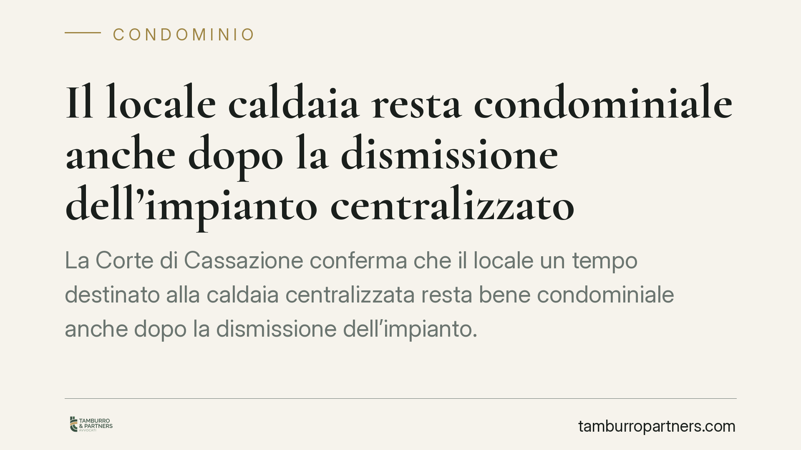

Il locale caldaia resta condominiale anche dopo la dismissione dell'impianto centralizzato
La Corte di Cassazione conferma che il locale un tempo destinato alla caldaia centralizzata resta bene condominiale anche dopo la dismissione dell'impianto. La destinazione originaria non basta a far venir meno la presunzione di comunione fissata dall'art. 1117 del codice civile. Una precisazione rilevante per chi immagina di poter disporre liberamente di quello spazio.

Il caso
Con lo spegnimento del riscaldamento centralizzato e il passaggio ai singoli impianti autonomi, molti condomìni si trovano un locale tecnico ormai svuotato della sua funzione originaria. La domanda ricorrente è semplice: quel vano, senza più la caldaia, appartiene ancora a tutti i condòmini o può essere destinato ad altro uso, magari da un singolo?
La Cassazione ha risposto in modo netto. La dismissione dell'impianto non trasforma la natura giuridica del locale, che resta bene comune salvo diverso titolo.
Inquadramento normativo
Il riferimento è l'art. 1117 cod. civ., che elenca le parti dell'edificio presunte comuni: tra queste rientrano i locali destinati a servizi condominiali, come appunto quello che ospitava la caldaia centralizzata.
Si tratta di una presunzione di condominialità: la legge assume che quei beni siano di tutti, salvo che un titolo contrario (un atto di acquisto, un regolamento contrattuale, una divisione) ne attribuisca la proprietà esclusiva a un singolo condòmino. L'onere di provare tale titolo grava su chi rivendica la proprietà individuale.
Il punto centrale è che la presunzione opera in base alla destinazione strutturale e funzionale originaria del bene. Se il locale è nato per ospitare un impianto al servizio dell'intero edificio, la successiva cessazione di quel servizio non estingue la natura comune. Il collegamento con il godimento collettivo, in altre parole, non si scioglie automaticamente solo perché la caldaia è stata rimossa.
Implicazioni pratiche
Per i condòmini la conseguenza è concreta. Il locale caldaia dismesso non diventa una "terra di nessuno" appropriabile dal primo interessato, né uno spazio di cui l'amministratore possa disporre a proprio piacimento.
Qualsiasi utilizzo diverso da quello originario deve passare dalle regole della gestione dei beni comuni. Una nuova destinazione del locale (deposito, spazio tecnico per altri servizi, eventuale locazione a terzi) richiede una delibera assembleare adottata con le maggioranze previste dalla legge in base al tipo di decisione.
Allo stesso modo, la vendita o l'attribuzione esclusiva del vano a un singolo condòmino non può essere improvvisata: incide su un diritto di tutti e presuppone il consenso della compagine condominiale nelle forme richieste.
Attenzione anche al profilo dell'usucapione. Chi utilizza il locale in via esclusiva per lungo tempo potrebbe teoricamente invocarne l'acquisto, ma deve dimostrare un possesso qualificato, continuo e incompatibile con il diritto degli altri: un uso tollerato non basta.
Cosa fare in concreto
- Verificate i titoli. Prima di ipotizzare qualsiasi uso alternativo, consultate atti di acquisto e regolamento condominiale per accertare se esiste un titolo che deroga alla presunzione di comunione.
- Portate la questione in assemblea. Non decidete la nuova destinazione del locale in via informale: mettete il punto all'ordine del giorno e deliberate con le maggioranze corrette.
- Documentate lo stato dei luoghi. Fotografate e verbalizzate le condizioni del vano dopo la dismissione, utile in caso di future contestazioni o rivendicazioni.
- Diffidate gli usi esclusivi non autorizzati. Se un condòmino occupa il locale come proprio, l'amministratore intervenga tempestivamente per interrompere possibili pretese di usucapione.
- Chiedete una valutazione tecnico-legale. Prima di vendere o riqualificare lo spazio, consigliamo di verificare maggioranze necessarie, vincoli urbanistici e implicazioni sulle tabelle millesimali.
La dismissione di un impianto è spesso vissuta come la fine di un capitolo. Sul piano giuridico, però, il locale che lo ospitava continua a raccontare la propria storia comune. Ignorarlo espone il condominio a contenziosi tutt'altro che teorici.
---
*Contributo informativo a cura di Tamburro & Partners - Avv. Giuseppe Tamburro. Non costituisce parere legale.*
Ogni condominio ha una storia a sé.
Se gestisci un'amministrazione e vuoi un confronto su una specifica questione condominiale, scrivi allo studio. Ti rispondiamo entro un giorno lavorativo.